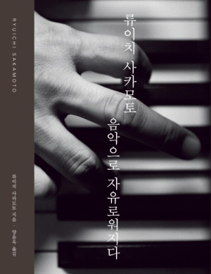

나는 앞으로
몇번의 보름달을 볼 수 있을까
|
나는 앞으로
몇번의 보름달을 볼 수 있을까 저자: 류이치 사카모토 발행: 2023.06.28.
시대를 대표하는 예술가이자 활동가
류이치 사카모토가 살아생전 마지막으로 전하는 이야기 2020년, 암의 재발과 전이로 인해 치료를 받더라도 5년 이상 생존율은 50퍼센트라는 진단을 받고서 시간의 유한함에 직면하게 된 류이치 사카모토. 『나는 앞으로 몇 번의 보름달을 볼 수 있을까』는 그런 그가 삶의 마지막 고비에서 되돌아본 인생과 예술, 우정과 사랑, 자연과 철학, 그리고 시간을 뛰어넘어 오래도록 기억될 그의 음악과 깊은 사유에 관한 기록이다. |
음악으로 자유로워지다
저자: 류이치 사카모토 발행: 2023.04.03.
서구권에서 먼저 명성을 얻으며 우리에게도 이름이 익숙한
세계적인 음악가 류이치 사카모토의 첫 자서전이 약 10년 만에 독자들을 다시 찾아왔다. 「Merry Christmas Mr. Lawrence」, 「Rain」 등 국내에도 널리 알려진 영화음악의 작곡가이자 전자음악의 개척자이며, 영화배우, 모델, 사회운동가 등으로도 활동한 그는 이 책에서 자신의 반생(半生)을 돌아보며 자신의 성장 과정과 자신을 둘러싼 음악 세계를 직접 이야기한다 |
|  |
류이치 사카모토,
음악으로 자유로워지다 저자: 류이치 사카모토 발행: 2014.08.11.
『류이치 사카모토 음악으로 자유로워지다』는
그의 60여 년 전생애와 예술활동을 시대 흐름에 따라 담백하게 이야기한다. 그가 문화예술활동을 통해 남긴 크고 작은 족적이 적지 않기 때문에, 이 책은 자서전의 형식을 빌린 20세기 문화의 모험기라 부를 만하다. 이 책을 통해 그를 여기까지 이끌어온 것은 대단히 예민한 호기심과 뜨겁게 집중하는 힘이라는 사실을 확인할 수 있다. |
류이치 사카모토
음악으로 자유로워지다 저자: 류이치 사카모토 발행: 2010.11.25.
자유로운 예술가 류이치 사카모토의 삶 그리고 음악
아시아를 대표하는 세계적인 뮤지션 류이치 사카모토의 첫 자서전『음악으로 자유로워지다』.
류이치 사카모토는 자유로운 아방가르드 예술가이자
세계적인 영화음악가, 일본 팝문화의 아이콘 등 다양한 호칭으로 불리고 있다. 이 책에서 그는 자신의 60여 년 생애를 돌아보며 그동안 자신이 걸어온 길을 시대 흐름에 따라 진솔하게 이야기한다. 솔직하면서도 거침없는 입담 속에서 시대의 거장 류이치 사카모토의 진면목을 발견할 수 있다. |